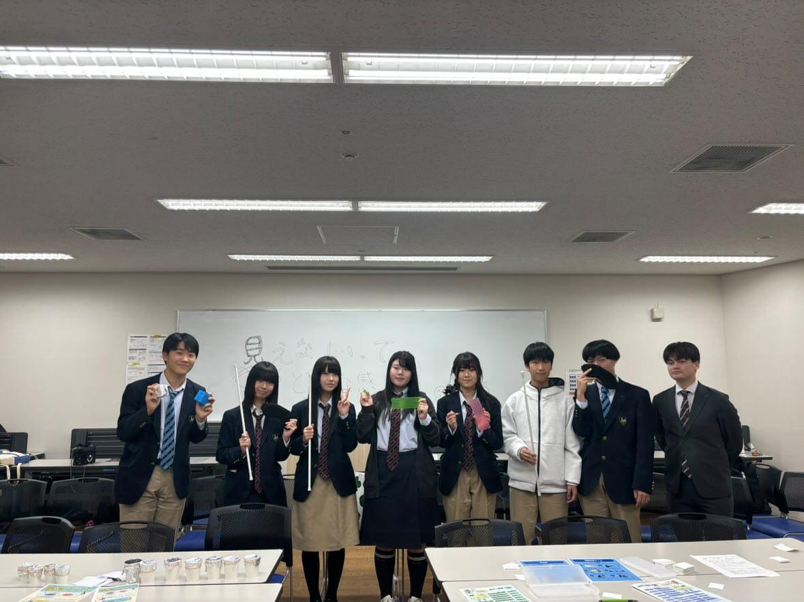
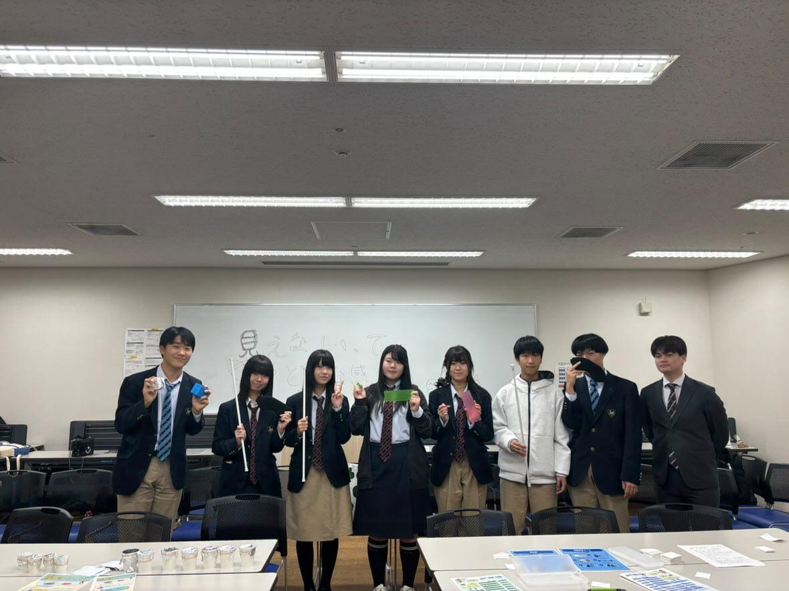

見えないってどんな感じ？
視覚障がい体験イベント開催報告
2025年11月3日（月・祝）開催
難波市民学習センター
イベント概要
2025年11月3日、難波市民学習センターで、自主企画イベント「見えないってどんな感じ？」を開催しました！
今回は、小学生からご高齢の方までの幅広い世代に向けた、「視覚障がい」について知ってもらうというテーマで、イベントを行いました。
準備の軌跡
ここではまず、このイベントに至るまでの活動について紹介していきます！
イベント開催の構想開始
プロジェクト「自主企画イベント開催」の立ち上げ
イベント開催に向けた準備チームの発足
イベントを開催する際に使用する会場への訪問
日本ライトハウス情報文化センター様の館内にある会議室へ、私達のイベントチームのメンバーが実際に訪れました。（左の写真） そこで、会場の規模感や、安全面などの確認も行いました。 更に、ライトハウスで行われている活動や施設の見学もさせていただき、これからの私達の活動のための糧になりました。 また、難波市民学習センター様（真ん中の写真）、阿倍野市民学習センター様（右の写真）にも実際に訪れました。 その際には、実際にどのようなイベントを行う予定なのか、また、どれくらいの規模が必要か、などのすり合わせも同時に行いました。
企画書の提出に向けた準備
企画しているイベントの内容をまとめた資料の作成をしました。
（添付されている画像は、実際の企画書を一部改変したものです。）
開催に向けた最終準備
開催場所の決定
イベントチームでの会議の末、難波市民学習センターでのイベントの開催が決定しました。
このイベントをそこで開催することに決まった理由は、JR難波駅が最寄り駅であるOCATで開催することにより、まだ難波市民学習センターを訪れたことがない方でもスムーズに来館できるという利点があるからです。
誰でも、いつでも、わかりやすく来館できるように場所を選びました。
（左の写真はOCAT入り口です。）
広報活動
このイベント開催にあたって、多くの場所や施設でこのイベントに関する広報活動を行いました
小中学校への広報
イベントの開催場所から、徒歩約20分圏内に位置する小中学校にイベント広報用のポスターを配布させていただきました。
駅構内での広報
Osaka Metro様の駅構内にて、ポスターを貼らせていただきました。
- 長居駅（御堂筋線）
- なんば駅（四つ橋線）
- 肥後橋駅（四つ橋線）
- ポートタウン西駅（ニュートラム）
- ポートタウン東駅（ニュートラム）
左：肥後橋駅構内
右：なんば駅構内
その他の施設への広報
日本ライトハウス情報文化センター
どのようなイベントを行うのかについて、そしてどのように協力していただけるかについて、実際に施設を訪れ、相談をしました。 また、施設内に私達が作成したポスターを置いていただくこともできました。
大阪YMCA
この施設の方には、イベントの内容をお伝えした後、ポスターを掲示していただけないかどうかご相談しました。 チラシとして20枚、ポスターとして2枚受け取っていただくことができました。
大阪府立大阪南視覚支援学校
以前よりこのチームに協力してくださっている方々に、私達の活動の一部をより深く知ってもらうため、ポスターを共有し私達のイベントに招待しました。
4つのワークショップ
イベント当日、体験型のワークショップを4種類実施しました
点字を体験しよう
街中でよく見かける、点字。果たして、どのように点字で書いたり読んだりするのでしょうか？
このワークショップで、「伝言ゲーム」と「点字」を組み合わせたゲームをして遊び、点字で文字を書いたり読んだりすることを学んでみましょう！
においクイズ
においは、目の不自由な方にとって、強力な情報源となります。
今目の前にあるものは、食べ物の匂いなのか、飲み物の匂いなのか。はたまた花の香りなのか、香水の匂いなのか。
このクイズは、「調味料のにおい」を頼りにして、どの匂いが何の調味料なのかを当てるゲームです。
シンプルですが、案外難しいこのゲームに、ぜひ挑戦してみてください！
白杖体験
目が不自由だと、何もないままで道路を歩くのは危険です。そのため、「白杖」と呼ばれる道具を用いて、街中を歩きます。
では、白杖はどれくらい視覚障がいのある方にとって大事なものなのでしょうか。
障害物がたくさんある道を、目の前が真っ暗な状態で実際に歩いてみませんか？そして、白杖の大切さを、体験して知りましょう！

神経衰弱
目隠しをした状態だと、視覚が失われます。では、その状態では、どの感覚を頼りにしながら物を判別するのでしょうか？
このゲームでは、素材や中身が異なるブロックを用いて、神経衰弱を行います！
触り心地や中に入っているものの音を聞き分けながら、同じ素材、同じ中身のブロックのペアを作っていきましょう！

 
